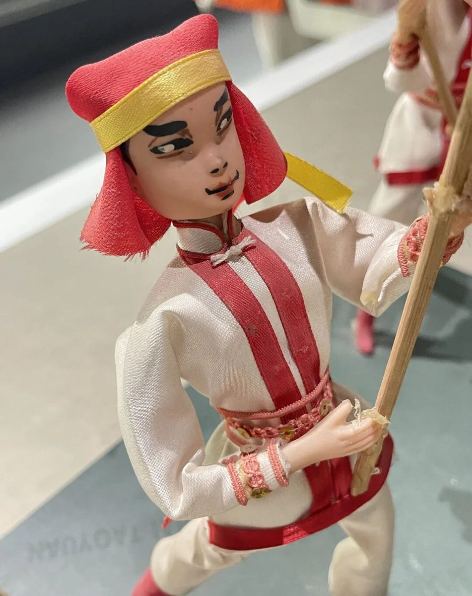
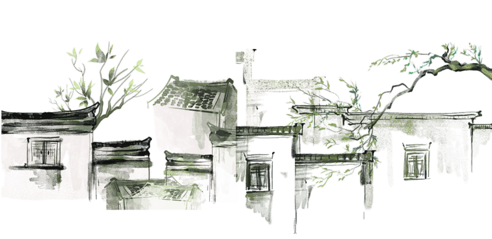
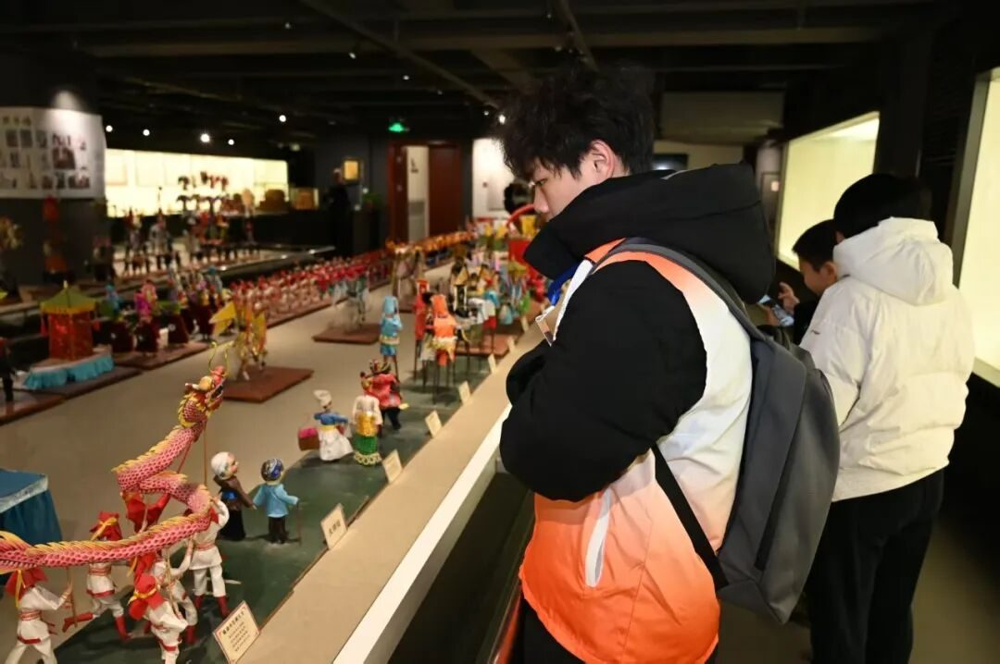
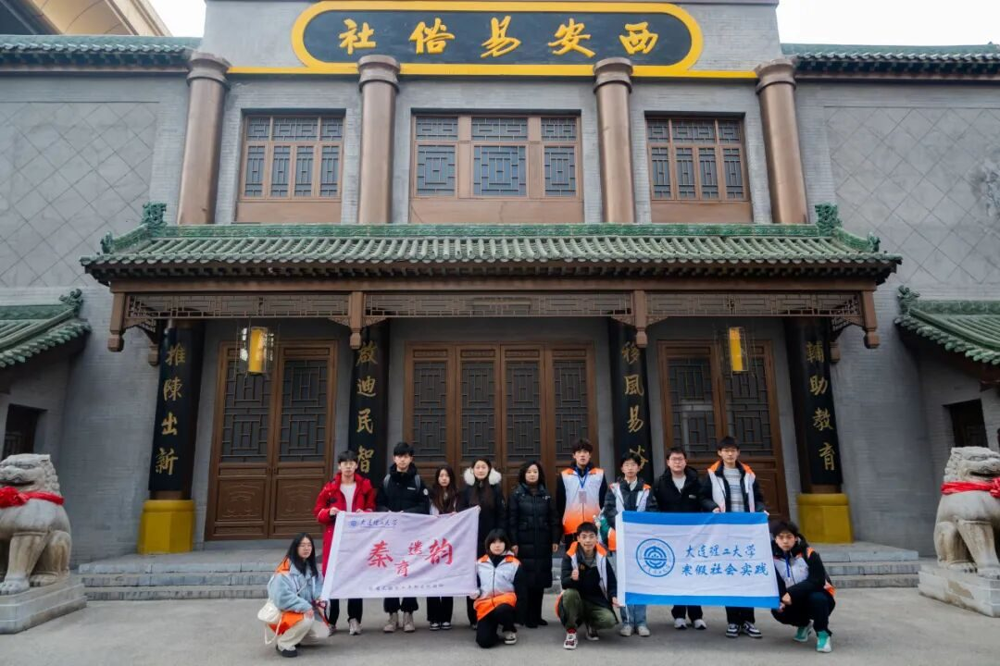

【行者无疆·秦育遗韵】个人实践感悟——王子翔
走进非遗世界
感受文化瑰宝

曾经，我去过很多博物馆，但一直未能真正体会到艺术品的韵味。远远地打量着作品，它们静静地陈列在那里，如同我在网络上无数次浏览过的图片一般，并不能在我心中激起太多波澜。 而这次，随着实践的深入，因为亲自采访了非遗传承人，被传承人口中鲜活的故事、执着的坚守所触动；因为亲身四处奔波、努力外联，才格外珍惜这次体验机会；因为身边还有一群志同道合的小伙伴，大家一同穿梭在展馆中，交流探讨、分享感悟，让每一次驻足欣赏都变得更加深刻。那些看似冰冷的艺术品，在这些因素的包裹下，逐渐有了温度。



我缓缓走近，目光聚焦在每一笔每一划的走势上，脑海中不断浮现出创作者背后的典故与情感。就在那一刻，内心被深深震撼，我仿佛穿越时空，与创作者站在了同一维度，产生了强烈的共鸣。 眼前这些看似简单的几笔，却勾勒出了栩栩如生的作品，背后是创作者无数个日夜的积累与沉淀。从这寥寥数笔中，我仿佛看到创作者在昏暗的灯光下，潜心钻研技艺，挥洒汗水的身影；仿佛能感受到他们学艺时的艰辛与执着，以及倾注在作品中的炽热情感。
外联沟通非遗人
后勤护航团队行
我主要负责外联与后勤工作。起初，我以为这些工作很简单。然而，真正投身其中，才发现困难重重。最开始，我四处碰壁，连最基本的联系途径都难以寻觅，就算好不容易找到了联系方式，大多数换来的也是拒绝，甚至还因为人生地不熟，带着团队绕了弯路。这些挫折让我深刻认识到，这份工作远非想象中那般容易。
但我并未因此气馁，反而激发了我的斗志，一心琢磨如何改进工作方法。之后，我会提前前往了每一个负责联系的目的地，现场进行外联，不放过任何一个可能的联系机会；我会不断地找各种途径，网上找不到联系方式，就用“政府热线”“市民热线”“人推人介绍”“亲身前往”等等等等各种途径，只为抓住那一丝可能的线索；为了确保活动当天的行程顺利，我会和队长在活动前一天提前踩点，仔细记录每一个路口、每一段路线，确保活动当天能带领团队准确无误地抵达目的地。
同心协力共同成长
——迈向更好自我
这次参与社会实践，我的初心就是想加入“行者无疆”这样优秀的团队多多学习，进一步提升自我。 幸运的是，我在团队中遇到了许多温暖的支撑。队长毫无保留地给予我信任，让我立志为团队贡献更多的力量；组长像一个大哥哥，总是安慰和鼓励我，每当我的工作出现困难，组长总是第一时间给予我关怀与鼓励；优秀的学长学姐们，让我找到了学习的榜样。从他们身上，我学到了实用的技能和宝贵的经验，激励我不断突破自我，追求更高的目标。 还有一群志同道合的伙伴们，随着相处的深入，我们在彼此的世界里留下了越来越多的印记，情谊也愈发深厚。
行者们

相信我们“行”遍西安，脚步不止，渐行渐近彼此的世界！
相信我们“行”遍西安，脚步不止，渐行渐近彼此的世界！
-END-
来源 | 行者无疆实践团
图片 | 行者无疆实践团
文字 | 王子翔
编辑 | 郑瑞瑄
审核 | 李凌志 杩健辉
责编 | 邹靓靓